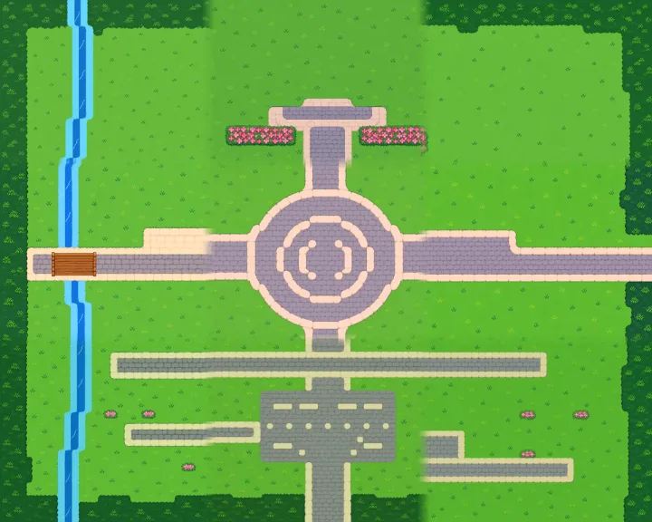

นครอาร์คเฮล์ม
ห้ามใช้ Auto (ต้องเล่นมือ)

มอนที่พบ
| มอน | Lv | HP | ธาตุ |
|---|---|---|---|
| ไม่มีมอน | |||
NPC
ผู้เฒ่าโอเวน ผู้แนะนำนักผจญภัย
ลีน่า แม่ค้าร้านของใช้
บรูโน่ ช่างตีเหล็ก
ฟิลิกซ์ ผู้ดูแลคลังของ
ไอริส ช่างตีบวก
เซเลน ผู้หลอมรูน
มาร์โก นายหน้าตลาดกลาง
ลุงเกรเกอร์ คนขับรถม้า
เซอร์ดาเรน ครูฝึกโรงเรียนอัศวินหลวง
ซิสเตอร์มารีน ผู้ดูแลวิหารนครอาร์คเฮล์ม
ลีน่า แม่ค้าร้านของใช้
บรูโน่ ช่างตีเหล็ก
ฟิลิกซ์ ผู้ดูแลคลังของ
ไอริส ช่างตีบวก
เซเลน ผู้หลอมรูน
มาร์โก นายหน้าตลาดกลาง
ลุงเกรเกอร์ คนขับรถม้า
เซอร์ดาเรน ครูฝึกโรงเรียนอัศวินหลวง
ซิสเตอร์มารีน ผู้ดูแลวิหารนครอาร์คเฮล์ม